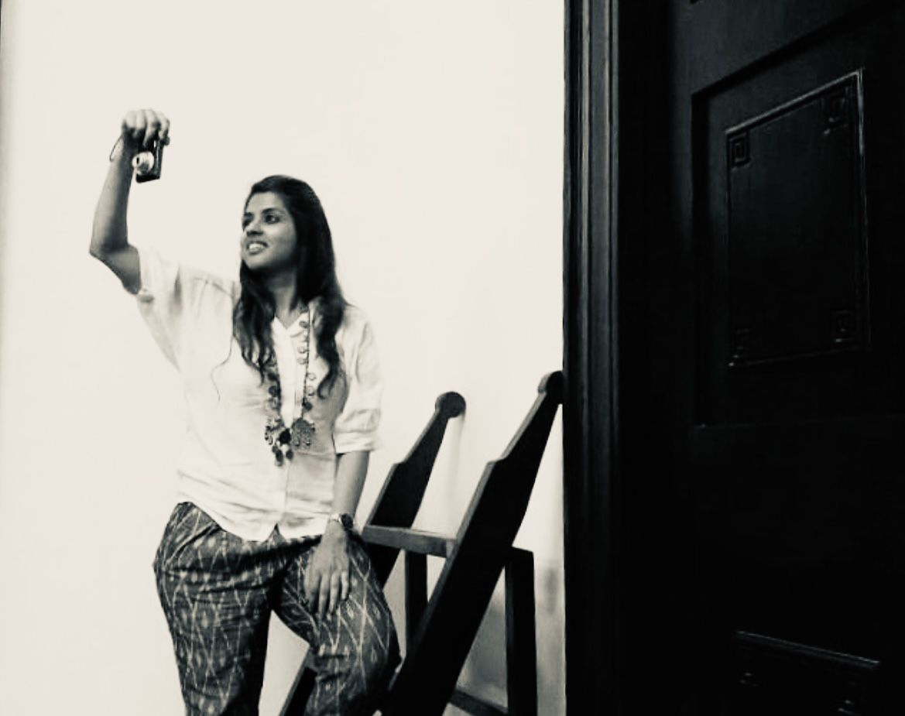
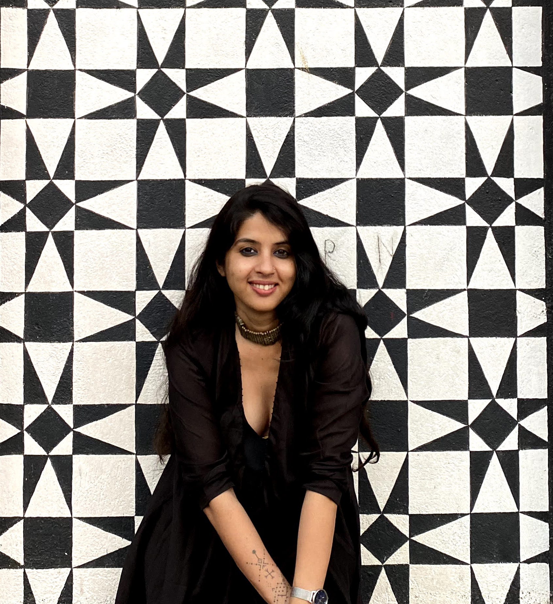
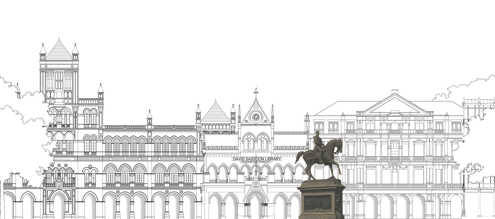
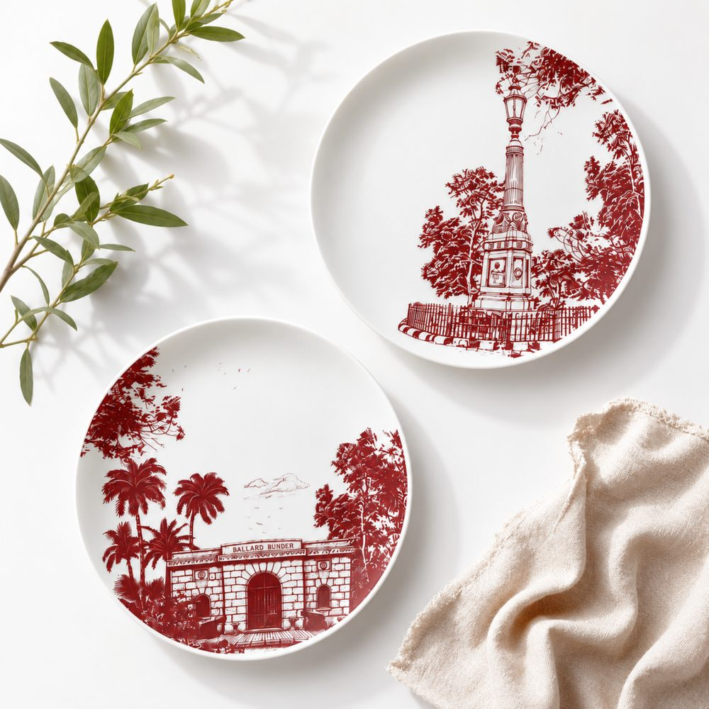
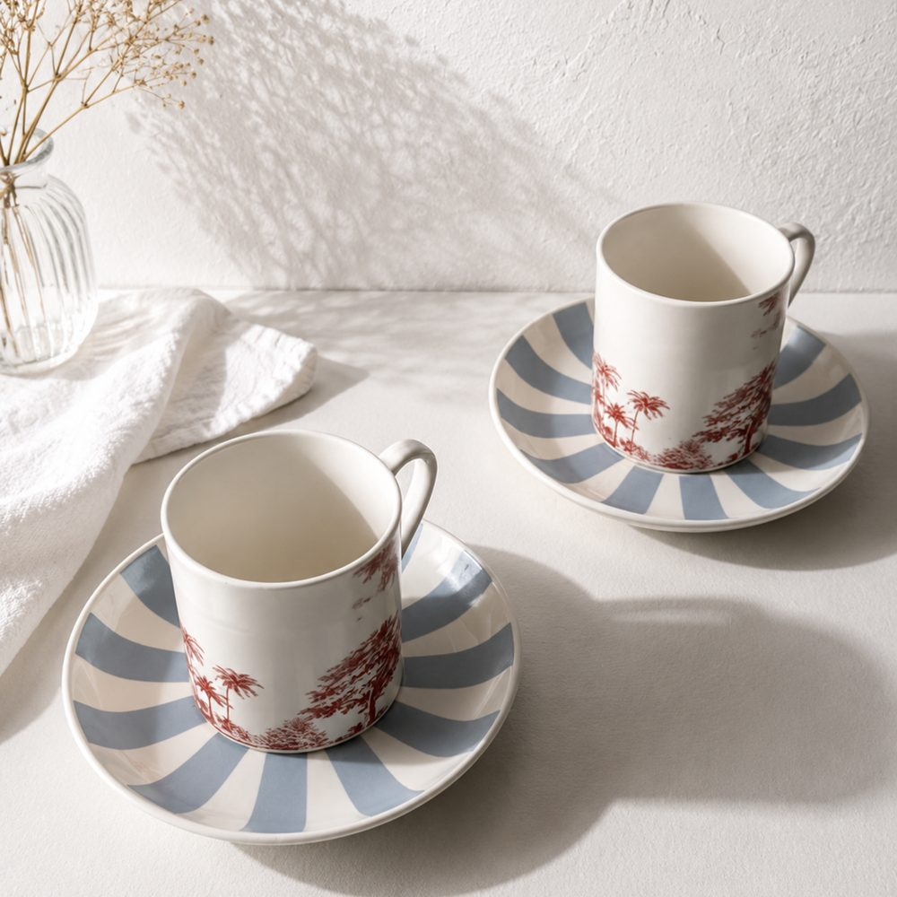
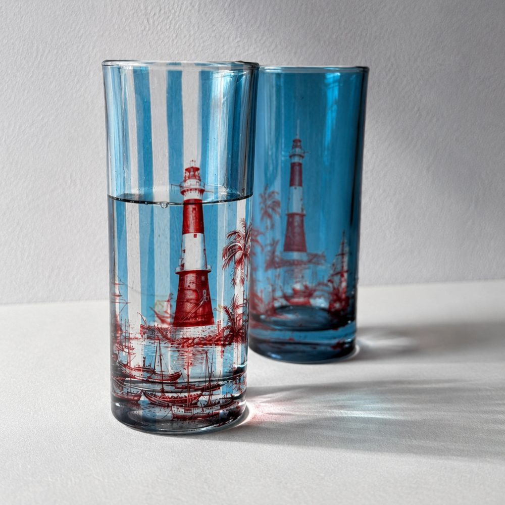
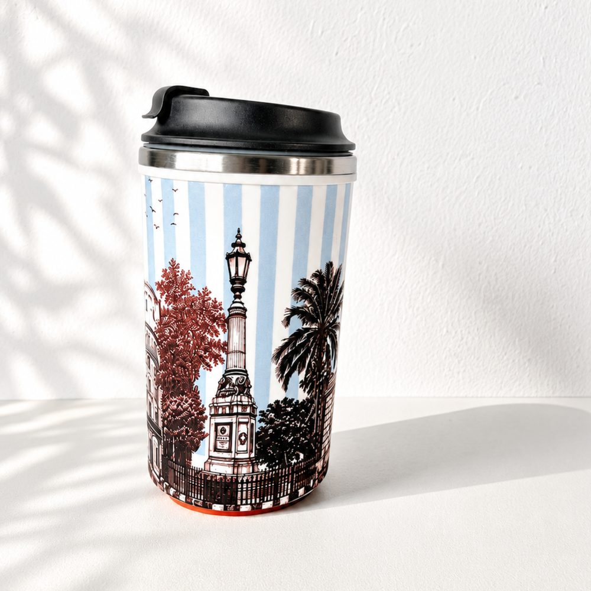
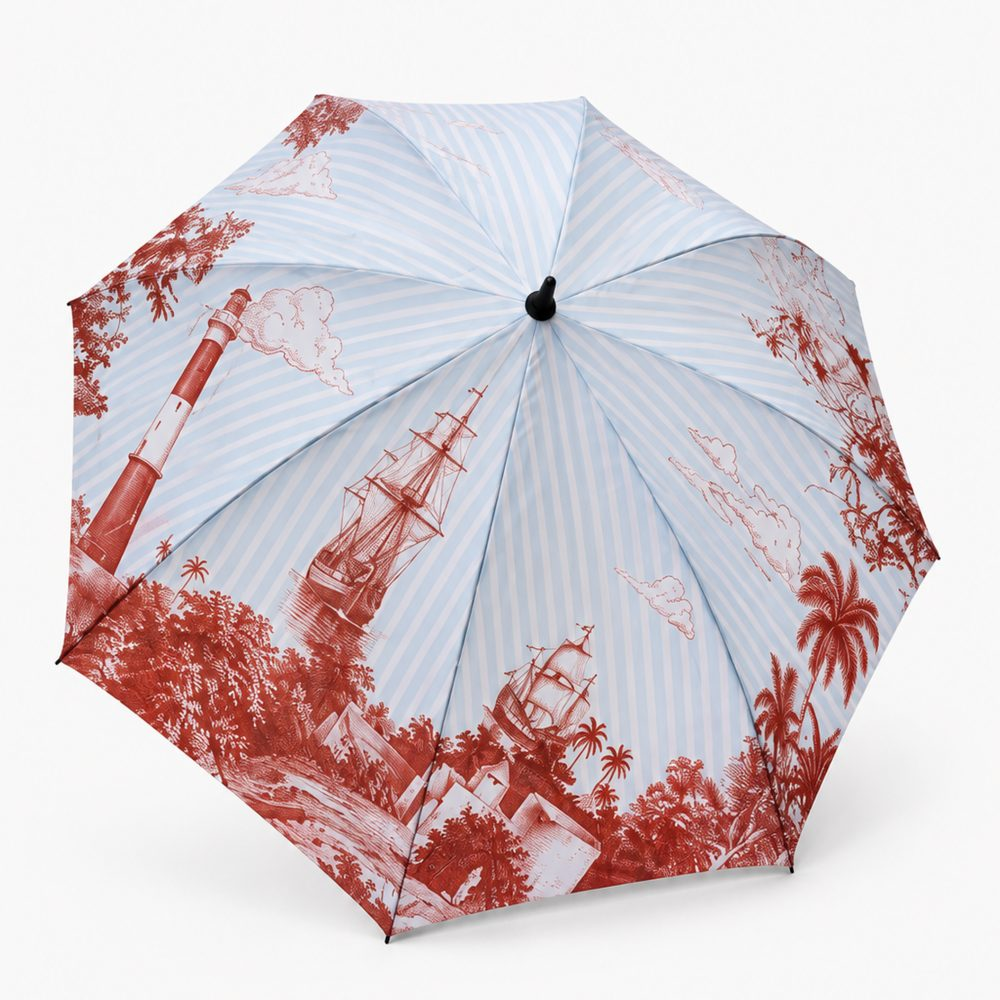
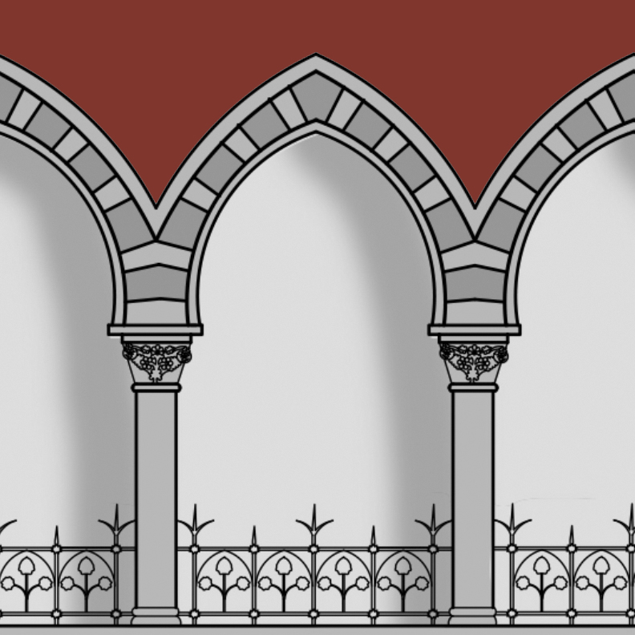
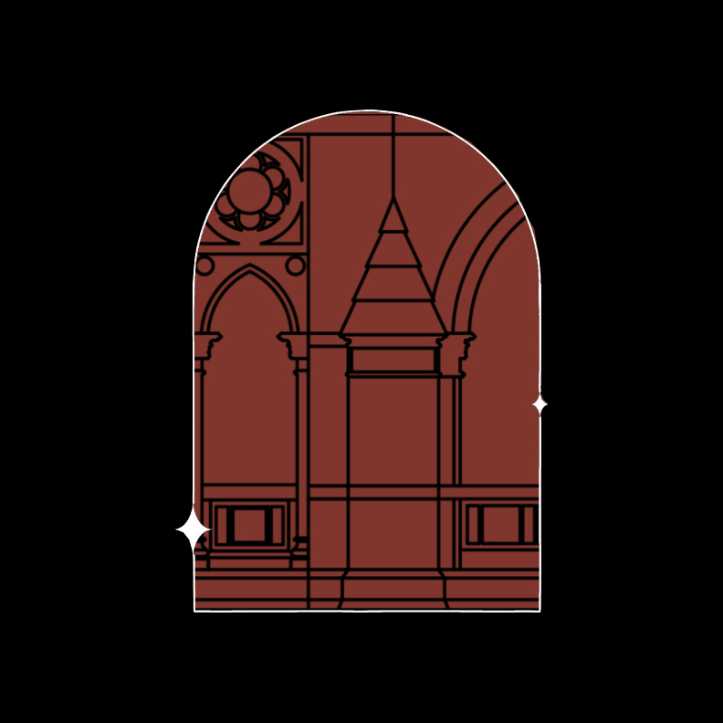

Born from my love for Mumbai and deep respect for its cultural heritage, Bombay Gothic began in 2021 as a way to bring art and architecture into our everyday lives. My work celebrates the city’s iconic Gothic skyline through illustrated cityscapes that spark nostalgia, honour history, and invite you to see Mumbai through a new lens.
As a conservation architect, I preserve the physical fabric of our cities. But through Bombay Gothic, I also try to preserve the intangible — the memories, moods, and magic that make Bombay, Bombay. Every piece is a love letter to the city’s soul — where art, heritage, and storytelling meet.
the city, illustrated
Bombay's heritage streets, drawn line by line. Keep scrolling to walk the precinct.

new design series
A maritime toile of Ballard Estate, in Bombay Gothic maroon on powder-blue nautical stripes.
Bombay has always been a city shaped by water. The Bombay Ballad celebrates that maritime legacy through an original interpretation of the Toile de Jouy tradition — Bombay Gothic's signature maroon set against powder-blue nautical stripes, weaving Ballard Estate's Edwardian architecture together with the harbour, its lighthouses, ships and tropical landscapes.
shop the bombay ballad




shop by category
Explore our curated collections of artistic curios inspired by Bombay's architectural designs and timeless charm.
Harnessing the power of architectural storytelling to create unique graphic interpretations, bespoke merchandise, and compelling brand narratives inspired by heritage.


Explore Bombay’s rich architectural history through our curated walking tours. Each walk is a journey through time, uncovering the stories behind the city’s most iconic structures.
stories
Notes on the buildings, streets and history behind our designs.